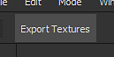
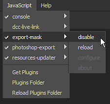

This step by step guide describes how to create a simple plugin that allows to export the mask of the currently selected layer in a project.
The goal of the plugin in this guide is to export all the channels of the current Texture Set inside a project as individual textures.
To add a new Javascript plugin, a folder must be created into the plugin folder of Substance 3D Painter.
To access the plugins folder, navigate to:
| Platform | Version | Path |
|---|---|---|
| Windows | 7.2 or newer | C:\Users\username\Documents\Adobe\Adobe Substance 3D Painter |
| Legacy | C:\Users\username\Documents\Allegorithmic\Substance Painter | |
| Mac | 7.2 or newer | /Users/username/Documents/Adobe/Adobe Substance 3D Painter |
| Legacy | /Users/username/Documents/Allegorithmic/Substance Painter | |
| Linux | 7.2 or newer | /home/username/Documents/Adobe/Adobe Substance 3D Painter |
| Legacy | /home/username/Documents/Allegorithmic/Substance Painter |
A plugin name is based on the name of its parent folder.
For this example, simply create a new folder named export-textures inside the plugins folder.
Open the newly created folder and create two empty text files (notepad):
The qml file extension is a Javascript extension for scripts created for Qt QML language. It allows to run Javascript code but also create custom UIs.
The main.qml file is mandatory, it's the first file that will be looked for by the application to load the plugin. Additional files can be created with any names however, allowing to split a script into parts for easier management. In this case, toolbar.qml will be used to describe the look of a button that will be added in the interface by the plugin.
Open the script files into a text editor such as Notepad++ and paste the following code snippets. Take a look at the code comments for more details.
toolbar.qml
import QtQuick 2.7
import AlgWidgets 2.0
import AlgWidgets.Style 2.0
AlgButton
{
tooltip: ""
iconName: ""
text: "Export Textures"
}
main.qml
// Default includes, to acces Qt/QML
// and Substance 3D Painter APIs
import QtQuick 2.7
import Painter 1.0
// Root object for the plugin
PainterPlugin
{
// Disable update and server settings
// since we don't need them
tickIntervalMS: -1 // Disabled Tick
jsonServerPort: -1 // Disabled JSON server
// Implement the OnCompleted function
// This event is used to build the UI
// once the plugin as been loaded by Substance 3D Painter
Component.onCompleted:
{
// Create a toolbar button
var InterfaceButton = alg.ui.addToolBarWidget("toolbar.qml");
// Connect the function to the button
if( InterfaceButton )
{
InterfaceButton.clicked.connect( exportTextures );
}
}
// Custom function called by the Button,
// this is the core of the plugin
function exportTextures()
{
// Catch errors in the script during execution
try
{
// Verify if a project is open before
// trying to export something
if( !alg.project.isOpen() )
{
return;
}
// Retrieve the currently selected Texture Set (and sub-stack if any)
var MaterialPath = alg.texturesets.getActiveTextureSet()
var UseMaterialLayering = MaterialPath.length > 1
var TextureSetName = MaterialPath[0]
var StackName = ""
if( UseMaterialLayering )
{
StackName = MaterialPath[1]
}
// Retrieve the Texture Set information
var Documents = alg.mapexport.documentStructure()
var Resolution = alg.mapexport.textureSetResolution( TextureSetName )
var Channels = null
for( var Index in Documents.materials )
{
var Material = Documents.materials[Index]
if( TextureSetName == Material.name )
{
for( var SubIndex in Material.stacks )
{
if( StackName == Material.stacks[SubIndex].name )
{
Channels = Material.stacks[SubIndex].channels
break
}
}
}
}
// Create the export settings
var Settings = {
"padding":"Infinite",
"dithering":"disbaled", // Hem, yes...
"resolution": Resolution,
"bitDepth": 16,
"keepAlpha": false
}
// Build the base of the export path
// Files will be located next to the project
var BasePath = alg.fileIO.urlToLocalFile( alg.project.url() )
BasePath = BasePath.substring( 0, BasePath.lastIndexOf("/") );
// Export the each channel
for( var Index in Channels )
{
// Create the stack path, which defines the channel to export
var Path = Array.from( MaterialPath )
Path.push( Channels[Index] )
// Build the filename for the texture to export
var Filename = BasePath + "/" + TextureSetName
if( UseMaterialLayering )
{
Filename += "_" + StackName
}
Filename += "_" + Channels[Index] + ".png"
// Perform the export
alg.mapexport.save( Path, Filename, Settings )
alg.log.info( "Exported: " + Filename )
}
}
catch( error )
{
// Print errors in the log window
alg.log.exception( error )
}
}
}
Once done, save and close the file.
Start Substance 3D Painter, by default new plugins are automatically loaded and enabled.
Open a project then click on the UI button created by the plugin to export the channels of the currently selected Texture Set:

To enable or disable a plugin, use the Javascript menu at the top of the interface:
